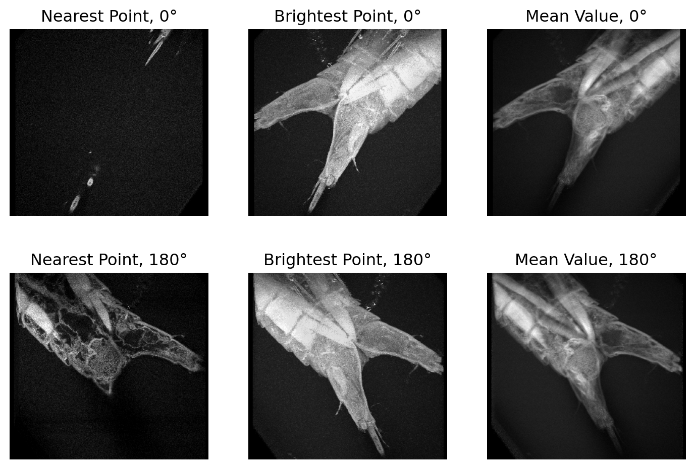
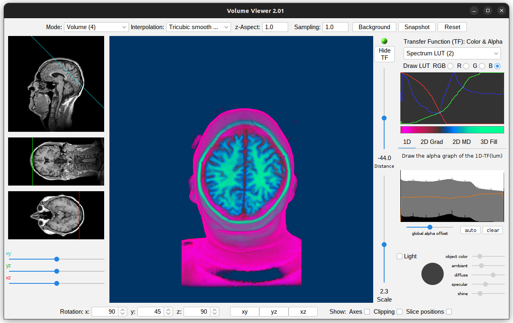

For this homework you will use two different visualization tools. One is under Image/Stack, and the second is a more advanced Volume Viewer plugin. For these questions, different correct solutions/approaches are possible.
Question 1
Use the 3D projection tool that came with ImageJ
Upload the CLSM “3DMini” data sequence I added under /Images in BBLearn (its zipped – unzip and you should see 30 images). Use import, image sequence, to upload the entire sequence.
Under Image/Stacks:
Use z-projection for a first maximum intensity projection – this is just a quick check its working.
Here is the maximum intensity projection of the image stack.
Generate 3D projections (use interpolate “on”, slice spacing 3). Pick a projection angle and use projection methods nearest point, brightest point, and mean value to compare. Document and describe with 2-3 sentences what the difference looks like, and what works best and suggest why.
I used the parameter settings shown below to generate the 3D projections.
Here are the 3D projections using the different projection methods. The projections shown are from the 0° and 180° angles.
The Nearest Point projection at 180° appears to highlight structures visible deeper in the z-stack, while the 0° projection highlights structures closer to the surface of the specimen. The Brightest Point method emphasizes the most intense pixels, providing a clearer view of the brightest structures, which appers to be useful fo highlightling the more external structures of the specimen. The Mean Value projections offer the most balanced view of the specimen with less contrast but a more consistent representation of the specimen’s internal structures, making it beneficial for a comprehensive understanding of the specimen’s morphology.

3D projections of the specimen using different projection methods (0° and 180° views shown).
Extra point: what do you think does this sequence shows biologically?
I would guess that the specimen in the images is likely a part of an insect, maybe a lim or a portion of the thorax, given the segmented appearance.
Question 2
Download the volume viewer Plugin which can be found [here(]https://imagej.nih.gov/ij/plugins/volume-viewer.html)
Place the plugin into your ImageJ plugin folder and restart ImageJ. Please review the online documentation if needed.
Use the T1-Head 2.4 MB data set featuring 129 slices that came with your ImageJ installation ( File/Open samples).
Activate Volume Viewer (Plugin/3D/Volume Viewer).
Provide two rendered images in a sagittal and coronal view (you need to find out what these views are). Explain which axis you used for tilting. Set slice z-spacing to 1.0. By modifying the 2D GRAD rendering options, what generates transparent yet contrast visualizations? Document and describe.
The screenshots below shows the rendered image of the sagittal section (1st) and corronal section (2nd) of the head in the MRI. The exact LUT and 2D Grad settings used are visible in the screenshots. To improve the transparency while maintaining contrast, I modified the LUT to use distinct colors for different intensities.
Sagittal View of Head
Coronal View of Head
Provide an approx. 45 degree view from above the head with the top part of the brain cut. Use a LUT table to make the image look more differentiated if it is useful. Document your image.
The screenshot below shows a 45° view from above the head (back) with a section cut across the top of the skull. The brain is visible in cyan and green, while the rest of the head is visible in magenta.
 45° View from Above the Head with the Top Part of the Brain Cut
c Using the “light” option, provide reflections on the bone surface to increase plasticity of the rendition. Document your setting (screenshot ok) and image.
Here is a view of the bone surfaces (face and skull) with reflections. The settings used for lighting are shown in the screenshot below.
Coronal View of Head